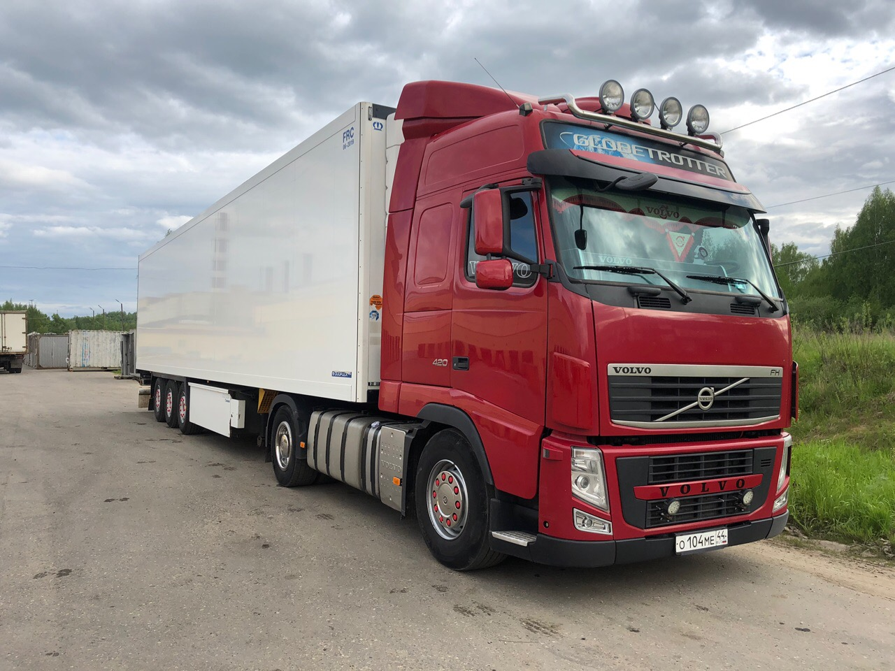
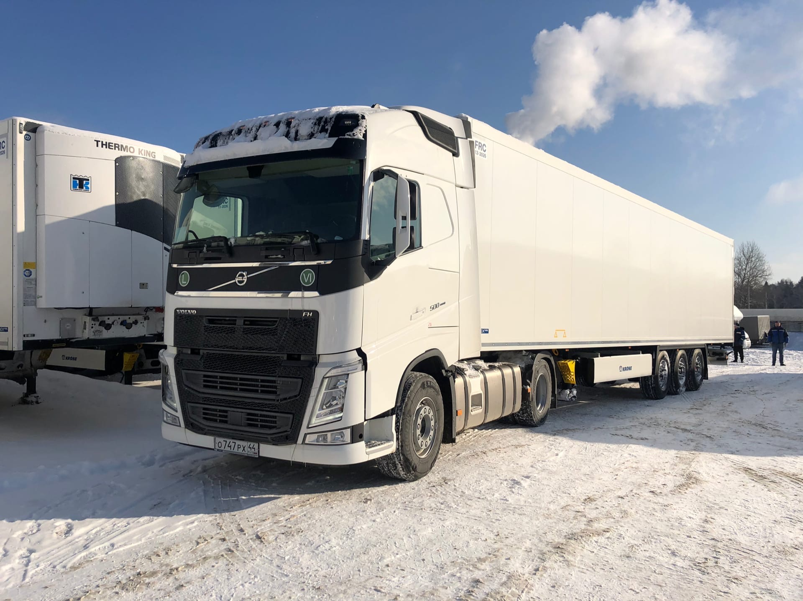
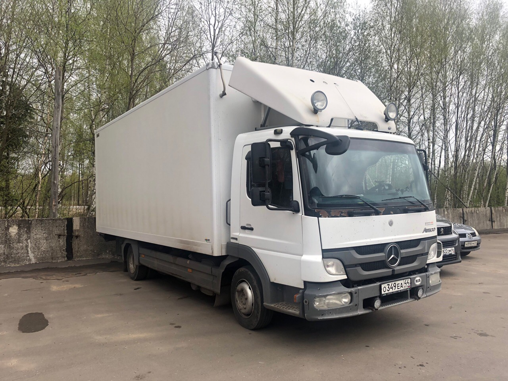
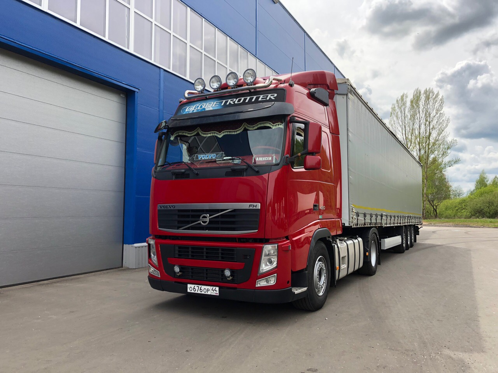
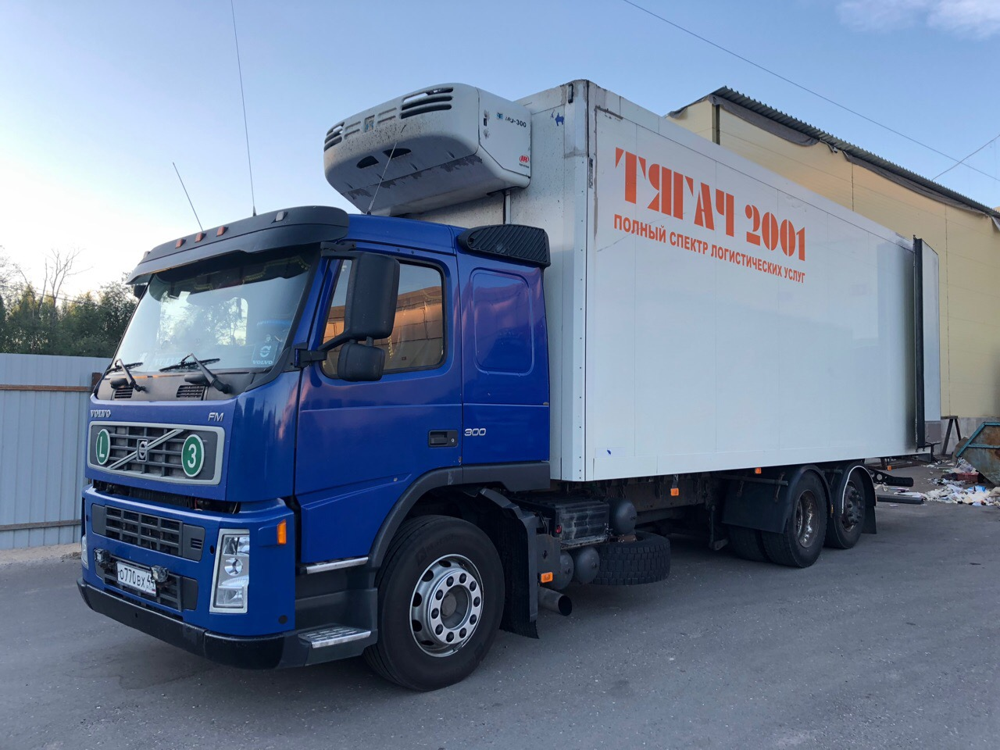
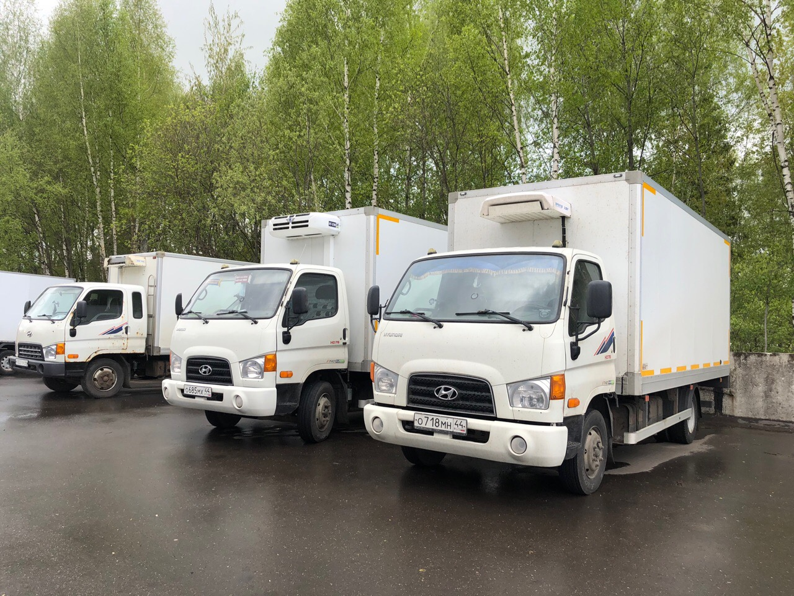

Автопарк

Рефрижератор
Volvo FH-12, 420 Сил
Надёжный магистральный грузовик. Работает в сцепке с полуприцепом-рефрижератором Krone с системой автоматического поддержания требуемого температурного режима. Предназначается для транспортировки грузов, требующих глубокой заморозки или охлаждения.

Рефрижератор
Volvo FH-12, 500 Сил
Крупнотоннажный магистральный грузовик 2020 года выпуска. Работает в сцепке с полуприцепом-рефрижератором Krone с системой автоматического поддержания требуемого температурного режима. Предназначается для транспортировки грузов, требующих глубокой заморозки или охлаждения.

Рефрижератор
Mercedes Atego
Среднетоннажный грузовик от немецкого производителя грузоподъёмостью 7 тонн, оборудован кузовом-рефрижератором.
Занимает промежуточное положение между крупнотоннажными грузовиками и небольшими фургонами.

Тент
Volvo FH-12, 420 Сил
Надежный магистральный грузовик. Работает в сцепке с тентованным полуприцепом, прекрасно подходит для перевозок коммерческих грузов, не требовательных к температурному режиму и нуждающихся в защите от атмосферных воздействий

Рефрижератор
Volvo FM
Шведский магистральный грузовик грузоподъёмностью 15 тонн. Оборудован кузовом-рефрижератором. Отлично чувствует себя в городских условиях ввиду своей манёвренности и небольших относительно фур размеров.

Рефрижератор
Hyundai HD 78
Корейский грузовик, оборудованный кузовом-рефрижератором, грузоподъемностью 5 тонн. Прекрасно чувствует себя в городских условиях и хорошо подходит для транспортировки небольших грузов.